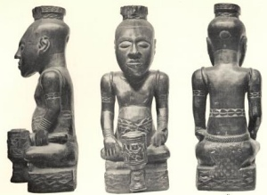

Sacred Texts Africa
Buy this Book at Amazon.com
|  | Religion and Mythby James Macdonald[1883] |
This pioneering Victorian study of comparative African religious beliefs, draws on ethnographies, folklore studies, historical and traveler's accounts. Macdonald examines in detail taboos, magic, divination, prophecy, sacrifice, sorcery, sexual practices, and the status of women. He also ties in data from Celtic, Ancient Near East, Pacific and other cultures. Particularly, he includes comparative points from his native land, Scotland. Macdonald demonstrates that there are broad similarities between African belief systems and those of other pre-industrial peoples.
In his final chapter he critiques European attempts to 'civilize' Africans, by selling them useless or harmful trade goods, converting them to Christianity, or by forcing them to wear European clothes (!). He observes that Africans have just as much cultural potential as any other people, if allowed to develop on their own terms. This was a very progressive view for his time. This book will enhance any study of African spirituality.